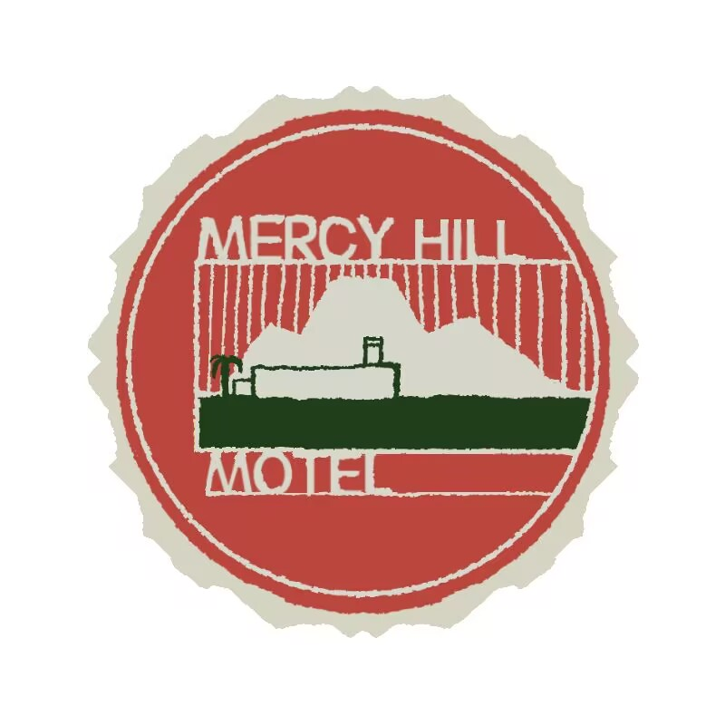

Welcome to Mercy Hill Motel
“慈悲山汽车旅馆一直在等待您。”
无论您只是停留一夜，还是需要暂时远离漫长的旅途，我们都希望这段短暂的留宿能让您感受到如同归家一般的舒适与安心。
在漫长而单调的公路旅途中，每位旅人都需要一个停下脚步的地方。位于荒漠公路旁的慈悲山汽车旅馆，致力于为过往来客提供舒适的客房、安静的环境与一段难得的休憩时光。
Front Desk Notice
有关旅馆设施、客房与服务人员的信息，请通过上方导航栏前往相应页面查看。

Last Vacancy Before the Desert.
“慈悲山汽车旅馆一直在等待您。”
无论您只是停留一夜，还是需要暂时远离漫长的旅途，我们都希望这段短暂的留宿能让您感受到如同归家一般的舒适与安心。
在漫长而单调的公路旅途中，每位旅人都需要一个停下脚步的地方。位于荒漠公路旁的慈悲山汽车旅馆，致力于为过往来客提供舒适的客房、安静的环境与一段难得的休憩时光。
有关旅馆设施、客房与服务人员的信息，请通过上方导航栏前往相应页面查看。